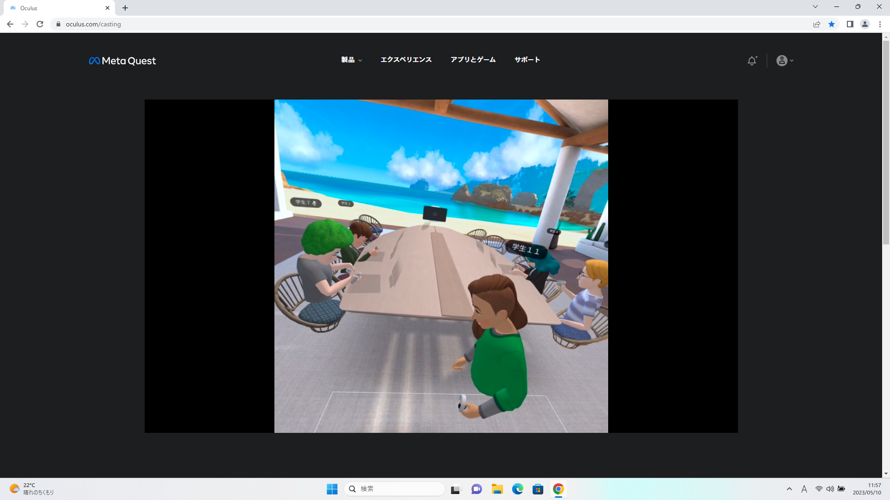

第2週目
2-1 １週目のレポートをHTMLで作る
１週目のレポート
1.内容
Githubにいき、rep01の中身が書かれているページを開いて、鉛筆のマークを押して一週目に体験したサイエンスアートとゲーム制作、ホームページづくりの内容と感想を自分の言葉で書き換えた。
2.感想
内容や感想を書き換えるときに、文字を消すときに間違えて英語の部分を消しそうになって危なかったから気を付けようと思った。けど英語のどの部分がどう機能しているのかは気になった。また、ちゃんと
日本語の部分を書き換えるとレポートの内容や感想の部分だけ変わっていてすごいと思った。
2-2 機械学習体験
1.内容
Teachable Machineというサイトで画像学習のモードを使って、機械に様々な位置や角度のグー、チョキ、パーの画像を学習させ、実際にカメラの前で出している手がグー、チョキ、パーのどれなのかを
判別させた。
2.感想
最初はいったん200枚くらいの画像を学習させてから判断させてみたけど、学習させていない位置や角度だったらチョキがパーと認識されたりしてうまく判断できていなかったので、画像が多ければ
多いほど正確な認識ができるようになると思った。また、機械の画像認識の仕組みが前から気になっていたけど、実際に使われているものは実験実習で学習させたよりももっと大量の画像を学習させて
認識させているんだなと思った。そして、簡単に機械学習が体験できて楽しかった。
2-3 VR（バーチャルリアリティー：Virtual Reality）会議室の体験

1.内容
隣の人とペアになって、一人がゴーグルをつけ、コントローラーを動かして実際に仮想空間内の会議室を体験し、もう一人がパソコンでゴーグルに映っている映像を共有して仮想空間内の様子を見たり、
指示を出したりする。その後交代してパソコンだった人がVRで会議室を体験する。
2.感想
かんそうかんそう